クッポグラフィー 駒沢公園スタジオ
Kuppography Komazawa
フォトスタジオだけど撮影以外の日にも訪れる、撮影客以外の街の人とも繋がるための公園のような空間。
既存テナントの空間形状とフォトスタジオに必要な彩光の取り方を解きながら上記コンセプトを体現する空間を目指し、天高のある空間に小屋を建てその周辺に外部をとりこみ、自然光を多面的に空間に引き込む計画とした。小屋の脇や上部から光が差し込み、天高の低い空間でも自然光を直接感じることができる。その結果１面彩光のテナントで、外との物理的距離の序列が、それぞれの空間と自然光との多様な関係を作っている。それにより空間ごとの居心地の変化を生み、連続する空間の中でも多様な居住性の実現に寄与している。
また、内外を仕切るガラスを植物で囲むことで境界をあいまいにしていくことと同時に、植物の存在感によって“外部の心地よさ”をダイナミックに室内に取り込んだ。
部材やマテリアル、色も公共空間とリンクするように選定した。例えば街中のガードレールで利用されているパイプ径や、駒沢公園（近隣の運動公園）の広場地面のパターンをモチーフにしたグラフィックなど、目にするもの、触れるものの背後に親しみを感じられるようにした。
カフェ、スタジオエントランス、オフィスの空間は動線を兼ねていることもあり、家具と家具の距離を広く計画している。それにより空間に居るスタッフや来客と、通りぬける人が程よい距離を保てるようになる。それは室内の密な関係ではなく、道端で立ち話をする人とその脇を通りすがる人のように、屋外での他人同士の距離感と同じ印象になり、カフェとスタジオエントランス空間に公共性を生み出すきかっけとなっている。
1面採光で奥行きのある空間、奥は天井高2m強という閉塞感のある既存条件から、自然光が入るスタジオ２室、カフェ、居心地のいいオフィスを作りながら、コンセプトを体現するためのデザインにより、どの空間においても閉塞感から解放された場を作り出せた。
公園のように設けられた空間、植物の生命力、ゆとりある家具配置と、そこを通りぬける動線が、街の人と来客、スタッフの混じわりを許容し、おおらかなコミュニケーションをうみだす空間となっている。
設計：a.d.p
企画: クッポグラフィー + SKETCH/ 関根将吾
施工 : HandiHouse project
植栽 :Yard Works
所在地：東京都
延床面積：180.07m²
設計 :2020年1月
工事 :2020年4月
竣工 :2020年6月

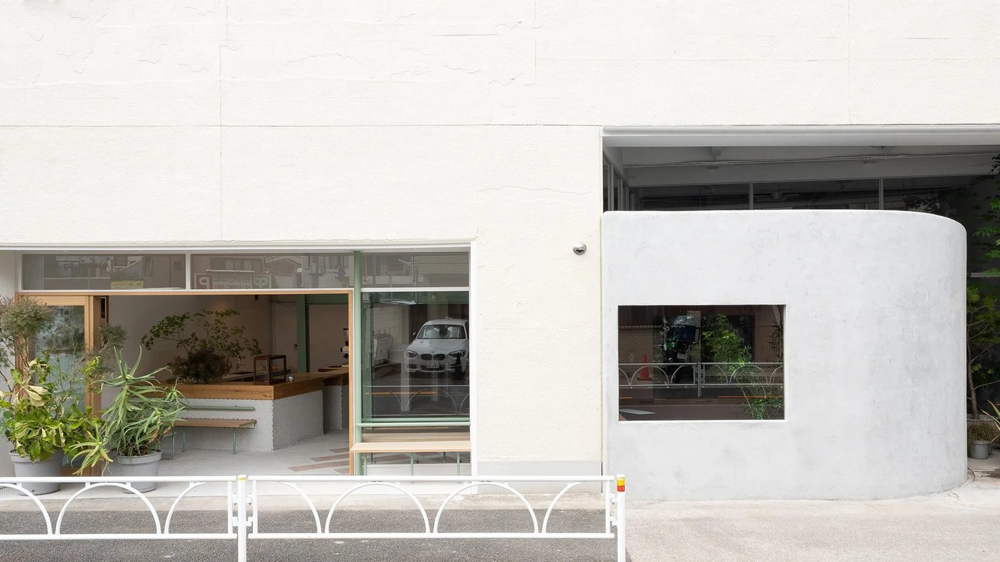
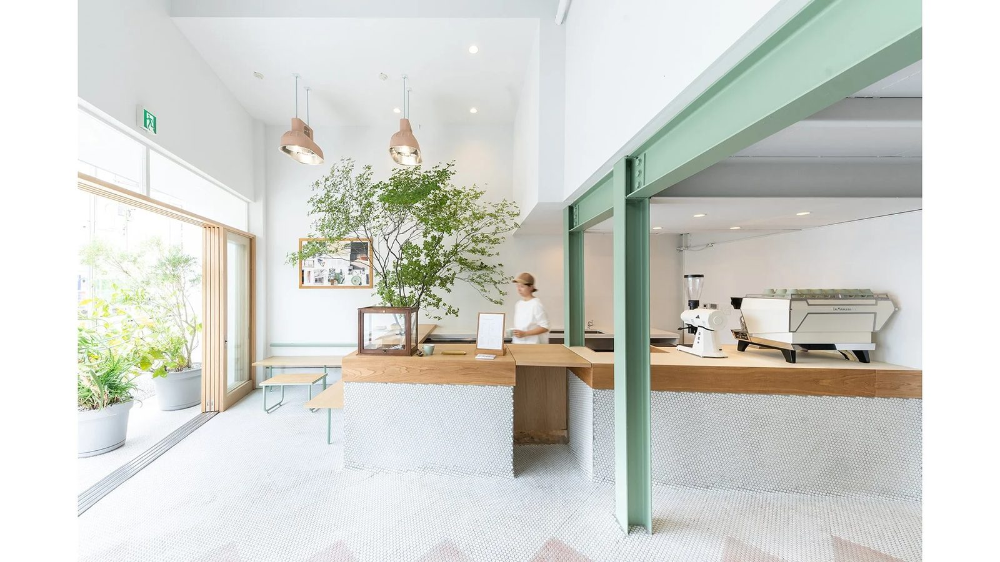
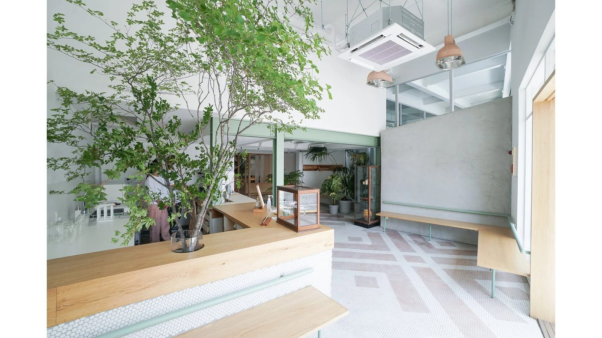
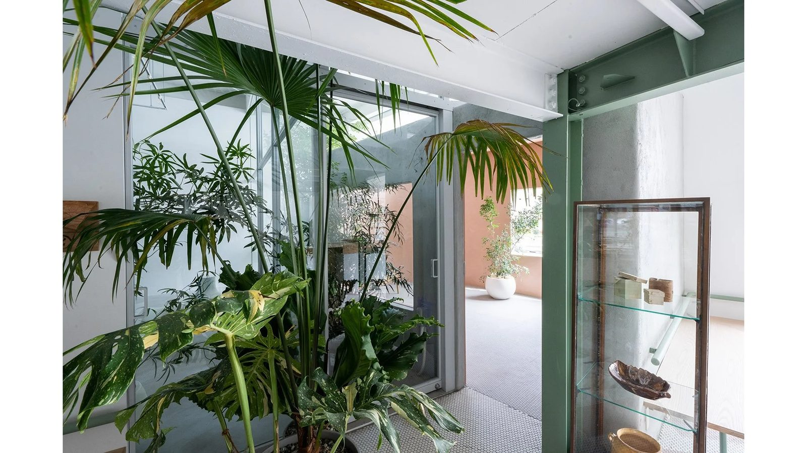
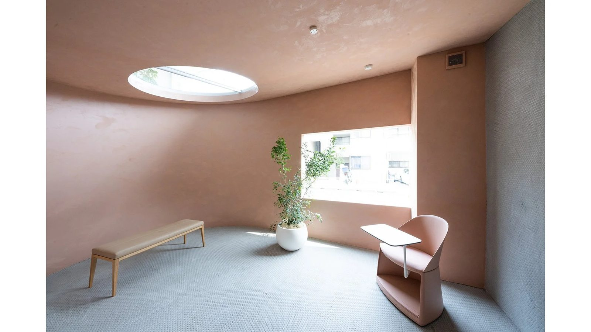

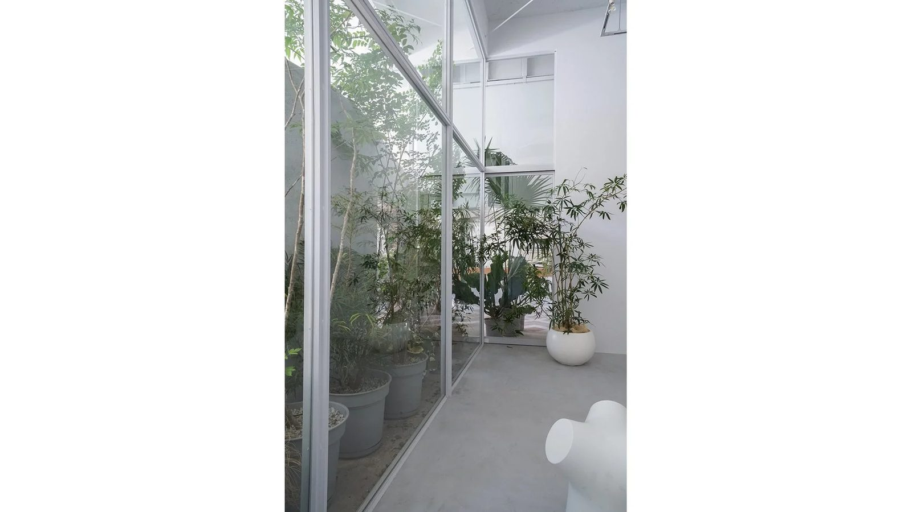
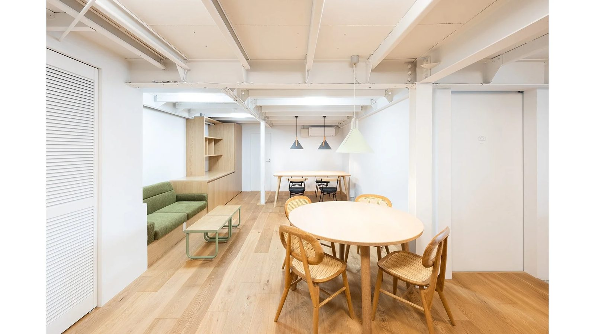
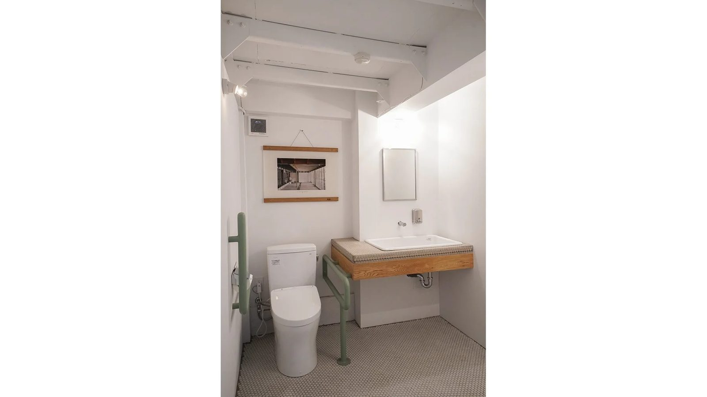
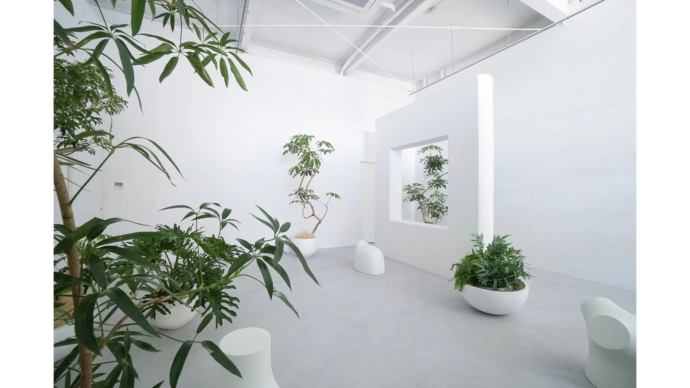
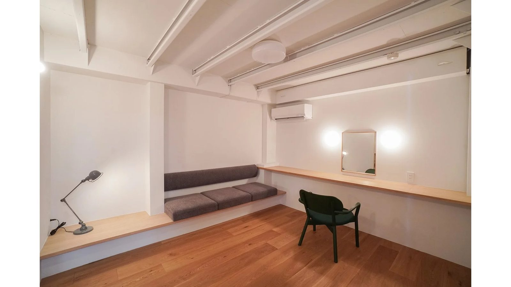
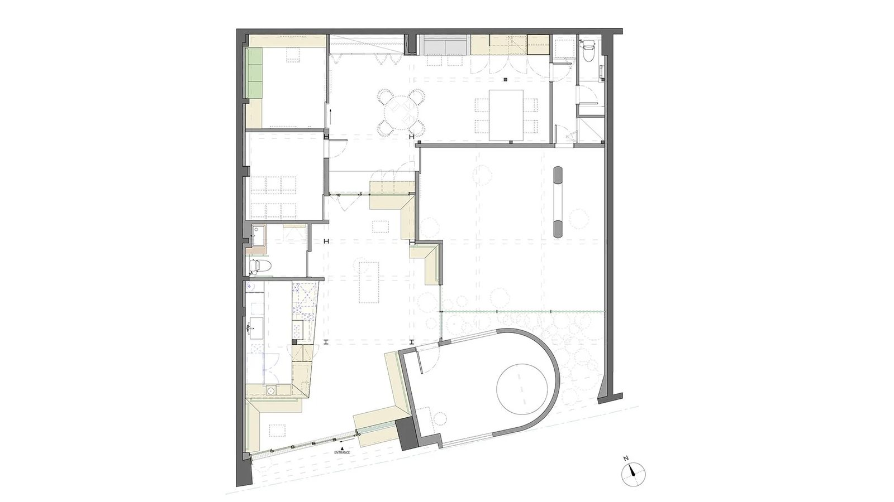